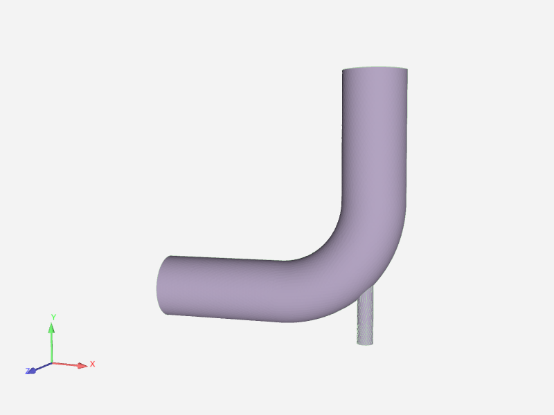
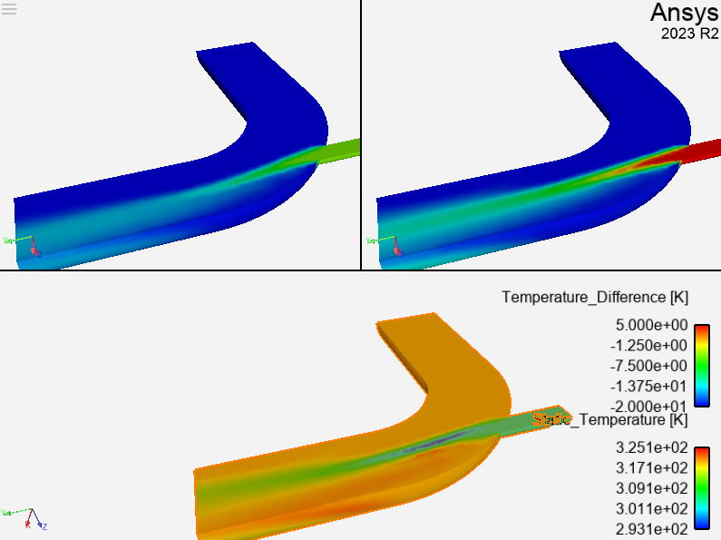

Note
Go to the end to download the full example code.
Design point comparison#
A common operation is to load two different datasets, usually design points, into the same EnSight session using separate cases. This example loads two Fluent design points and displays them in different viewports. It then computes the difference between the temperature fields and displays the result in a third viewport.
Start an EnSight session#
Launch and connect to an instance of EnSight. This example uses a local EnSight installation.
from ansys.pyensight.core import LocalLauncher
session = LocalLauncher().start()
Load the data#
Use a remote session to load the two datasets into different cases. Downloading the data can take a minute or more. Note the names of the parts that are loaded. The parts are shown on top of each other.
session.load_example("elbow_dp0_dp1.ens")
session.show("image", width=800, height=600)
print([p.PATHNAME for p in session.ensight.objs.core.PARTS])
Create a trio of viewports#
This code constructs a pair of viewports at the top for case 0 and case 1. It then creates a third viewport, which fill the lower half of the window, for the difference field.
# Create two more viewports. (There is always one viewport.)
session.ensight.objs.core.DEFAULTVPORT[0].createviewport()
session.ensight.objs.core.DEFAULTVPORT[0].createviewport()
# Make these viewports visible and grab references to the viewport objects.
session.ensight.objs.core.VPORTS.set_attr(session.ensight.objs.enums.VISIBLE, True)
vp0 = session.ensight.objs.core.VPORTS[0]
vp1 = session.ensight.objs.core.VPORTS[1]
vp2 = session.ensight.objs.core.VPORTS[2]
# Position the viewports by setting their WIDTH, HEIGHT, ORIGINX, and ORIGINY attributes.
vp0.WIDTH = 0.5
vp1.WIDTH = 0.5
vp2.WIDTH = 1.0
session.ensight.objs.core.VPORTS.set_attr(session.ensight.objs.enums.HEIGHT, 0.5)
vp0.ORIGINX = 0.0
vp0.ORIGINY = 0.5
vp0.BORDERVISIBLE = True
vp1.ORIGINX = 0.5
vp1.ORIGINY = 0.5
vp2.ORIGINX = 0.0
vp2.ORIGINY = 0.0
# Link the transforms of all the viewports to each other.
session.ensight.objs.core.VPORTS.set_attr(session.ensight.objs.enums.LINKED, True)
# Hide all but the "fluid" parts
session.ensight.objs.core.PARTS.set_attr(session.ensight.objs.enums.VISIBLE, False)
session.ensight.objs.core.PARTS["fluid"].set_attr(session.ensight.objs.enums.VISIBLE, True)
session.ensight.objs.core.PARTS["fluid"].set_attr(
session.ensight.objs.enums.ELTREPRESENTATION, session.ensight.objs.enums.BORD_FULL
)
session.show("image", width=800, height=600)
Color and assign parts to specific viewports#
This code colors the “fluid” parts using the Static_Temperature variable
and assigns specific parts to specific viewports. It then loads the
dataset-created fluid parts for both loaded cases.
Because another part is needed to display the temperature difference variable
in the lower pane, the code uses the LPART (part loader part) to create a
second instance of the fluid part in the first case. The code then computes
the difference field on this part to make it easier to display all three
at the same time.
fluid0 = session.ensight.objs.core.PARTS["fluid"][0]
fluid1 = session.ensight.objs.core.PARTS["fluid"][1]
# Using ``LPART``, find the ``ENS_LPART`` instance in the first case
# for the part named "fluid". Load this object to get a
# new instance of the case 0 "fluid" mesh.
fluid0_diff = session.ensight.objs.core.CASES[0].LPARTS.find("fluid")[0].load()
fluid0_diff.ELTREPRESENTATION = session.ensight.objs.enums.BORD_FULL
# Get the temperature variable and color the fluid parts by it.
temperature = session.ensight.objs.core.VARIABLES["Static_Temperature"][0]
fluid0_diff.COLORBYPALETTE = temperature
fluid0.COLORBYPALETTE = temperature
fluid1.COLORBYPALETTE = temperature
# Each of the three parts should only be visible in one viewport.
fluid0.VIEWPORTVIS = session.ensight.objs.enums.VIEWPORT00
fluid1.VIEWPORTVIS = session.ensight.objs.enums.VIEWPORT01
fluid0_diff.VIEWPORTVIS = session.ensight.objs.enums.VIEWPORT02
session.show("image", width=800, height=600)
Compute difference field#
Use the CaseMapDiff calculator function to compute the difference between the
Static_Temperature fields between the two design points. This defines a new
field, Temperature_Difference, on the fluid0_diff part. Color that part
by the resulting variable.
temperature_diff = session.ensight.objs.core.create_variable(
"Temperature_Difference",
value="CaseMapDiff(plist, 2, Static_Temperature, 0, 1)",
sources=[fluid0_diff],
)
fluid0_diff.COLORBYPALETTE = temperature_diff
session.show("image", width=800, height=600)
Adjust palette limits#
To make the visualization a bit easier to interpret, adjust the palette limits to the nearest factor of five. To improve visual appeal of the imagery, you could make also make adjustments to rotation, palette location, and more.
limits = [(round(v / 5.0) * 5) for v in temperature_diff.MINMAX]
temperature_diff.PALETTE[0].MINMAX = limits
remote = session.show("remote")
Close the session#
Close the connection and shut down the EnSight instance.
# sphinx_gallery_thumbnail_path = '_static/00_compare_4.png'
session.close()